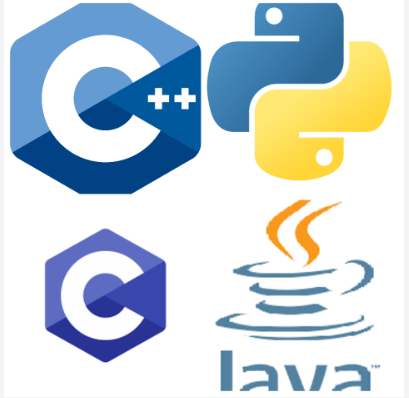

| Programming Language | Ratings |
|---|---|
 Python Python |
15.63% |
 C C |
11.17% |
 C++ C++ |
10.70% |
 Java Java |
8.95% |
 C# C# |
7.54% |
- Python
- C
- C++
- Java
- C#
Python
Python is a high-level, general-purpose programming language. Its design philosophy emphasizes code readability with the use of significant indentation.
C
C is a general-purpose computer programming language. It was created in the 1970s by Dennis Ritchie, and remains very widely used and influential. By design, C's features cleanly reflect the capabilities of the targeted CPUs. It has found lasting use in operating systems, device drivers, and protocol stacks, but its use in application software has been decreasing. C is commonly used on computer architectures that range from the largest supercomputers to the smallest microcontrollers and embedded systems.
C++
C++ is a high-level, general-purpose programming language created by Danish computer scientist Bjarne Stroustrup. First released in 1985 as an extension of the C programming language, it has since expanded significantly over time; as of 1997, C++ has object-oriented, generic, and functional features, in addition to facilities for low-level memory manipulation for making things like microcomputers or to make operating systems like Linux or Windows. It is almost always implemented as a compiled language, and many vendors provide C++ compilers, including the Free Software Foundation, LLVM, Microsoft, Intel, Embarcadero, Oracle, and IBM.
Java
Java is a high-level, class-based, object-oriented programming language that is designed to have as few implementation dependencies as possible. It is a general-purpose programming language intended to let programmers write once, run anywhere (WORA), meaning that compiled Java code can run on all platforms that support Java without the need to recompile. Java applications are typically compiled to bytecode that can run on any Java virtual machine (JVM) regardless of the underlying computer architecture. The syntax of Java is similar to C and C++, but has fewer low-level facilities than either of them. The Java runtime provides dynamic capabilities that are typically not available in traditional compiled languages.
C#
C# is a general-purpose high-level programming language supporting multiple paradigms. C# encompasses static typing, strong typing, lexically scoped, imperative, declarative, functional, generic, object-oriented (class-based), and component-oriented programming disciplines.
Tekst zaznaczony w paragrafie. Tekst z użyciem strong i em
Cień i obramowanie wokół tekstu.
Flexbox columns
Flexbox rows
